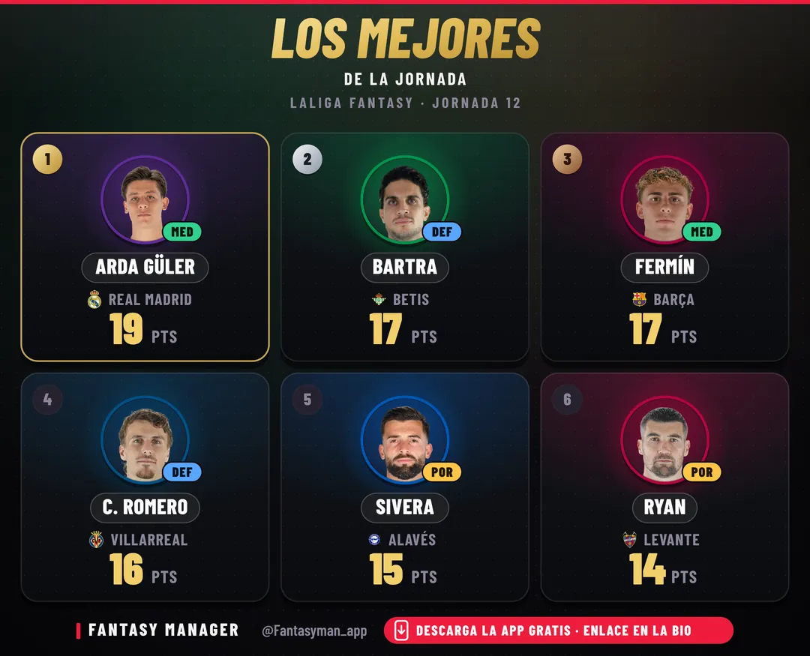

Resumen de la jornada 12
La jornada 12 de LaLiga Fantasy se jugó del viernes 6 de noviembre al domingo 8 de noviembre: 10 partidos y 16 goles. El que más puntos sacó fue Arda Güler (Real Madrid), con 19. El once ideal de lo que se jugó, en 4-5-1, suma 161 puntos. El equipo que más puntos dio entre todos sus jugadores fue el Real Madrid, con 127.
Puntos oficiales de LaLiga Fantasy, con los de DAZN incluidos, tal como estaban el domingo 15 de noviembre a las 14:54.
Los mejores de la jornada

 Arda GülerReal Madrid · MED19media 10,4
Arda GülerReal Madrid · MED19media 10,4
 FermínBarça · MED17media 9,3
FermínBarça · MED17media 9,3
 BartraBetis · DEF17media 5,6
BartraBetis · DEF17media 5,6
 C. RomeroVillarreal · DEF16media 3,1
C. RomeroVillarreal · DEF16media 3,1
 SiveraAlavés · POR15media 7,4
SiveraAlavés · POR15media 7,4
 RyanLevante · POR14media 6,8
RyanLevante · POR14media 6,8 ValverdeReal Madrid · MED13media 6,2
ValverdeReal Madrid · MED13media 6,2
 BarrenetxeaReal Sociedad · MED13media 4,8
BarrenetxeaReal Sociedad · MED13media 4,8 OskarssonReal Sociedad · DEL13media 4
OskarssonReal Sociedad · DEL13media 4 BuchananVillarreal · MED13media 3,5
BuchananVillarreal · MED13media 3,5

Once ideal de la jornada 12
El mejor portero y los mejores de cada línea en la formación que más suma (4-5-1, 161 puntos). Es el once de lo que ya se jugó, no una recomendación.
Resultados y MVP de cada partido
El MVP es el jugador de los dos equipos que más puntos de LaLiga Fantasy sacó en ese partido.
 Sevilla0-0Alavésvie 6, 21:00MVP: Sivera 15
Sevilla0-0Alavésvie 6, 21:00MVP: Sivera 15 Málaga1-2Racing
Málaga1-2Racing sáb 7, 14:00
sáb 7, 14:00 MVP: Y. Zabiri 12
MVP: Y. Zabiri 12 Espanyol0-0Deportivo
Espanyol0-0Deportivo sáb 7, 16:15
sáb 7, 16:15 MVP: Giménez 12
MVP: Giménez 12 Osasuna1-1Athletic
Osasuna1-1Athletic sáb 7, 18:30
sáb 7, 18:30 MVP: Catena 11
MVP: Catena 11 Valencia0-3Real Madridsáb 7, 21:00MVP: Arda Güler 19
Valencia0-3Real Madridsáb 7, 21:00MVP: Arda Güler 19 Elche0-2Betisdom 8, 14:00MVP: Bartra 17
Elche0-2Betisdom 8, 14:00MVP: Bartra 17- Real Sociedad1-0Rayo
 dom 8, 16:15MVP: Barrenetxea 13
dom 8, 16:15MVP: Barrenetxea 13 - Villarreal2-0Getafe
 dom 8, 18:30MVP: C. Romero 16
dom 8, 18:30MVP: C. Romero 16  Celta0-0Levantedom 8, 18:30MVP: Ryan 14
Celta0-0Levantedom 8, 18:30MVP: Ryan 14 Atlético1-2Barçadom 8, 21:00MVP: Fermín 17
Atlético1-2Barçadom 8, 21:00MVP: Fermín 17
Los que doblaron su media
Con 3 puntos de media o más y al menos 10 en esta jornada: sacaron el doble (o más) de lo que suelen.
Los peores de la jornada
Los que acabaron en negativo: una expulsión, un penalti fallado o muchos goles encajados.
 GayáValencia · DEF-3media 3
GayáValencia · DEF-3media 3 AznouMálaga · DEF-2media 0,8
AznouMálaga · DEF-2media 0,8 RiojaValencia · MED-1media 4,1
RiojaValencia · MED-1media 4,1 De HaasValencia · DEF-1media 3,6
De HaasValencia · DEF-1media 3,6 MaffeoValencia · DEF-1media 2,4
MaffeoValencia · DEF-1media 2,4 LuninReal Madrid · POR-1media 0,5
LuninReal Madrid · POR-1media 0,5
Los equipos que más puntos dieron
- Real Madrid127 pts
- Betis121 pts
- Villarreal119 pts
- Real Sociedad109 pts
- Racing90 pts
- Valencia13 pts
- Getafe34 pts
- Atlético36 pts
Sumando los puntos de todos sus jugadores en la jornada. Arriba, los cinco que más; abajo, los tres que menos.
De dónde salen los datos
Los puntos son los oficiales de LaLiga Fantasy de cada jugador en la jornada 12, con los de DAZN, de los 475 jugadores que salen en las estadísticas de los partidos. La media es la de toda la temporada. Si LaLiga corrige algún punto después, la página se rehace al día siguiente.
Con Fantasy Manager
La app te dice cada día qué hacer con tu equipo: quién de los tuyos sube o baja, a quién vender, cuánto pujar y qué cláusulas te llegan antes de la siguiente jornada.